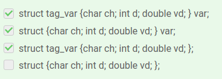
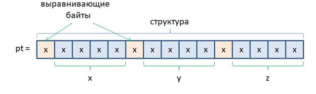
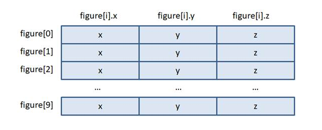
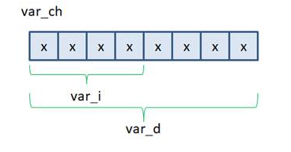
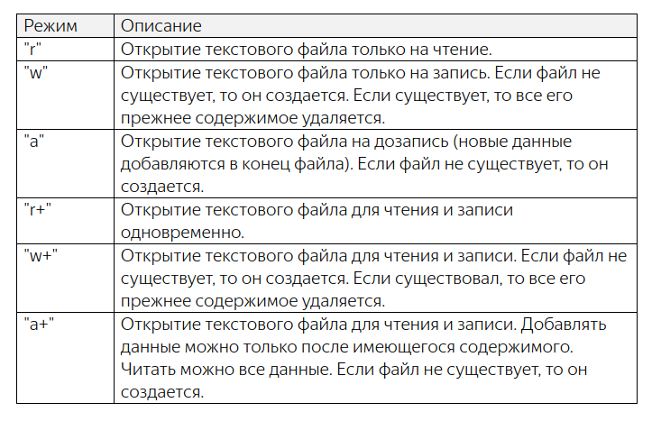

Структуры. Вложенные структуры
Ссылки: Структуры. Вложенные структурыmetanit.com/Структуры
Структура в языке программирования Си представляет собой составной тип данных, который состоит из других компонентов. При этом в отличие от массива эти компоненты могут представлять различные типы данных.
Объявление и определение структуры
Есть два типа объявления структуры. В первом случае после ключевого слова struct идет имя структуры:struct имя_структуры;Имя_структуры представляет произвольный идентификатор, к которому применяются те же правила, что и при наименовании переменных. Например:
struct person;
int main(void) {
return 0;
}
В данном случае мы объявили структуру person. Однако это объявление без определения. С такой структурой сложно что-то сделать, и в данном случае она представляет неполный тип (incomplete type), поскольку мы не знаем, какой размер занимает эта структура.
Второй тип объявления структуры - с определением выглядит следующим образом:
struct [имя структуры]
{
[поля струкутры]
};
[имя структуры] - необязательное (если квадратные скобки, то это значит что необязательно) имя структуры, как мы ее назовём.
[поля струкутры] - внутри фигурных скобок перечисляются переменные. Они в этом случае называются полями.
Объекты в теле структуры могут быть разных типов, в том числе структуры. В этом случае эти вложенные структуры так и называются вложенными.
Также необязательно поля записывать.
Следует отметить, что в отличие от функции при определении структуры после закрывающей фигурной скобки идет точка с запятой.
Пример простейшей структуры:
struct person
{
char* name;
int age;
};
Здесь определена структура person, которая имеет два элемента: age (представляет тип int) и name (представляет указатель на тип char).
Все элементы структуры объявляются как обычные переменные. Но в отличие от переменных при определении элементов структуры для них не выделяется память, и их нельзя инициализировать. По сути мы просто определяем новый тип данных.
Объявление переменной типа структура
Объявление структуры – это описание нового составного типа в тексте программы. Не более того. Компилятор здесь не создает никаких переменных и не размещает их в памяти. Это, всего лишь тип данных, подобно базовым типам char, int, double, ... . Но как объявить переменную этого типа? Пример объявления простой структуры для хранения координат точек в трехмерном пространстве и переменной этой структуры:Вне блоков функций:
struct tag_point {
int x;
int y;
int z;
};
Здесь объявили структуру struct tag_point, которая содержит 3 переменные типа int.Далее чтобы работать с этой структурой, внутри функции main объявим переменную pt типа struct tag_point:
nt main(void)
{
struct tag_point pt;
return 0;
}
В языке Си объявление переменной включает в себя два слова: struct и имя структуры. В отличие от языка С++, в котором первое слово struct можно опускать.
Объявить сразу и структуру и переменную этого типа можно так:
struct tag_var {char ch; int d; double vd; } var;
Здесь объявляются сразу структура struct tag_var и переменная var этого типа.

Потому что в 3х случая мы можем обратиться к структуре либо через название, либо через переменную. А когда нет ни того ни другого получается ошибка
struct {char ch; int d; double vd; }; - Этот вариант неверный с точки зрения синтаксиса . Имя структуры необязательно прописывать только в случае объявления переменной сразу после фигурной скобки, как здесь struct {char ch; int d; double vd; } var;
В enum так можно, а в структурах нет
Или если используется typedef {char ch; int d; double vd; } DATA; так тоже можно
Переменные типа структура в памяти
Структуры – это абстракция языка Си. В машинных кодах она, естественно, не существует. Поэтому когда мы объявляем переменную этого типа, то в памяти устройства выделяется нужный непрерывный участок из байт и все поля структуры (ее переменные) по порядку располагаются друг за другом:
При этом в памяти, где размещаются поля структуры, компилятор может самостоятельно добавлять, так называемые, выравнивающие байты. Для чего это нужно? Дело в том, что чтение данных из оперативной памяти пакетом в две или четыре ячейки может происходить быстрее, если читаемые данные расположены по четным адресам. Например, это имеет место в интелловской архитектуре процессоров, а в некоторых других архитектурах данные размером в машинное слово или двойное машинное слово вообще строго обязательно размещать по четным адресам. Именно по этой причине компилятор может добавлять выравнивающие байты, чтобы переменные размером в машинное слово попадали в четные адреса. Этот процесс по-английски называется alignment – выравнивание. В результате, размер данных в структуре может превышать сумму размеров каждого из ее полей. И истинный размер можно получить с помощью операции sizeof следующим образом:
size_t sz_pt = sizeof(pt); //размер памяти под переменную pt
size_t sz_st = sizeof(struct tag_point); //размер памяти под структуру
printf("sz_pt = %d, sz_st = %d\n", sz_pt, sz_st);
После запуска программы получились значения 12: sz_pt = 12, sz_st = 12То есть, в данном случае размер структуры в памяти равен сумме размеров трех целочисленных переменных int: 12 = 3 × 4
Как присваивать значения структурам?
struct tag_point {
int x;
int y;
int z;
};
int main(void)
{
struct tag_point pt; //объявление
После того, как мы объявили переменную pt на структуру, ее можно заполнить конкретными значениями. Делается это следующим образом:
pt.x = 1; pt.y = 2; pt.z = 3;То есть, пишется имя переменной, ставится точка и указывается имя поля, с которым мы собираемся работать. При этом запись pt.x или pt.y или pt.z – это уже отдельные целочисленные переменные типа int. И с ними мы работает как с обычными целочисленными переменными: присваиваем и считываем значения.
Другой способ, структуры можно инициализировать подобно массивам. Для этого используется похожий синтаксис:
<тип структуры> <имя переменной> = {[значения полей]};
В нашем примере инициализатор можно записать в следующих вариантах:
struct tag_point pt = {10, 20, 30}; //x=10, y=20, z=30
struct tag_point pt = {10}; //x=10, y=0, z=0
struct tag_point pt = {}; //значения полей автоматически приравниваются нулям
В последнем случае наличие пустого инициализатора просто обнуляет значения полей.
Стандарт С99 дополнительно вводит выделенные инициализаторы, которые позволяют задавать начальные значения полей по их именам следующим образом:
struct tag_point pt = {.y = -1, .x = 2};
Другие примеры присваивания значений структуре с использованием typedef:
#include <stdio.h>
#include <stdlib.h>
typedef struct {
int var_i;
double var_d;
} VAR;
int main(void)
{
VAR d; //объявление переменной d типа struct
//далее примеры присваивания
d.var_i = 10;
d.var_d = -0.12;
d = (VAR){10}; //первому полю присваивается значение
d = (VAR){.var_d = 0.5};
d = (VAR){.var_d = 0.5, .var_i = -5}; //похоже тут приведение к типу VAR, тогда в фигурных скобках что находится?
//d = VAR {.var_d = 0.5, .var_i = -5}; error: expected expression before ‘VAR’
//d = VAR{.var_d = 0.5, .var_i = -5}; error: expected expression before ‘VAR’
//d = 10; //error: incompatible types when assigning to type ‘VAR’ {aka ‘struct ’} from type ‘int’, другие верные
//d = {.var_d = 0.5}; //error: expected expression before ‘{’ token
return 0;
}
Тут происходит присваивание значений структуре, не инициализация, не путать эти процессы. Инициализация - это когда кроме присваивания также перед переменной указывают её тип.
Вложенные структуры
Пример, пусть объявлены перечисление и 2 структуры:
enum {name_length=50, b_length=20};
struct tag_fio {
char name[name_length]; /* имя */
char last[name_length]; /* фамилия */
};
struct tag_person {
struct tag_fio fio; /* ФИО */
char sex; /* пол: м или ж */
unsigned short old; /* возраст */
char b_date[b_length]; /* дата рождения */
};
Структура tag_person имеет поле fio типа структура tag_fioВ функции main нужно работать с этими структурами через переменную person:
int main(void)
{
struct tag_person person = {
{"Sergey", "Balakirev"},
'M',
98,
"32.07.1925"
};
return 0;
}
Здесь получается, что поле fio = {"Sergey", "Balakirev"}, которое состоит из двух полей: name[50] = "Sergey" и last[50] = "Balakirev"char sex = 'M'
unsigned short old = 98
char b_date[20] = "32.07.1925"
Обращаться к полям можно так:
printf("sex: %c, b_date: %s\n", person.sex, person.b_date);
То есть, мы также через операцию «точка» обращаемся к нужному полю по его имени и читаем данные. В итоге, person.sex – это переменная типа char, а person.b_date – одномерный массив символов.
Давайте теперь изменим поля old и b_date. Сделать это можно следующим образом:
person.old = 17; strcpy(person.b_date, "31.07.2006");Обратите внимание, person.b_date – это одномерный массив типа char, поэтому для копирования в него новой строки нужно использовать функцию strcpy(), которая выполняет эту операцию. Просто присвоить одному массиву другой массив, как мы с вами уже говорили, нельзя:
person.b_date = "31.07.2006"; // ошибка, так не работаетТолько с использованием строковых функций, о которых мы также с вами уже говорили. Хотя, в инициализаторе можно прописывать строковые литералы и они будут копироваться в соответствующие массивы. Но это отличия в работе инициализаторов и операции присваивания.
А теперь самое главное, как обратиться к полям вложенной структуры?
Думаю, многие из вас уже догадались. Сначала, конечно, нужно взять поле fio:
person.fio
Но это поле, в свою очередь, тоже структура с двумя своими полями name и last. Следовательно, после fio также нужно поставить точку и указать одно из этих полей, например, так:
printf("name: %s, last: %s\n", person.fio.name, person.fio.last);
Увидим строчку: name: Sergey, last: Balakirev
Как видите, все предельно просто. Соответственно, если нужно изменить одно из полей вложенной структуры, то делается аналогично полю b_date, например: strcpy(person.fio.name, "Sergiy");
Копирование одной структуры в другую
Благодаря тому, что структуры образуют полноценный тип данных языка Си и в нем переменные одного и того же типа можно присваивать друг другу с копированием всей информации. Например, определим еще одну переменную типа struct tag_person:struct tag_person p;Тогда в нее можно скопировать всю информацию из переменной person того же типа с помощью обычной операции присваивания:
p = person;Обратите внимание, здесь происходит именно копирование информации. На уровне машинных кодов область памяти, занимаемой структурой person, копируется в область памяти структуры p. В результате, все данные один в один копируются в структуру p. Поэтому, если вам нужно перенести данные из всех полей из одной структуры в другую, то лучше использовать обычное присваивание, чем по отдельности копировать поля. Это и быстрее и, кроме того, при изменении набора полей в структуре, в программе не понадобится вносить никаких изменений, что очень удобно.
Интересно, что массивы тоже можно было бы скопировать один в другой, если они прописаны внутри структуры. Например, пусть объявлена структура с одним одномерным массивом:
#include <stdio.h>
struct tag_array {
int marks[b_length]; //объявили структуру struct tag_array с полем marks[], представляющее собой массив
};
int main(void)
{
struct tag_array marks_1 = {2, 2, 2, 3, 2, 2}; //переменная marks_1 c значениями, которые находятся в массиве marks_1.marks
struct tag_array marks_2; //непонятно, что находится в marks_2
marks_2 = marks_1; //в массив marks_2 скопировали массив marks_1
for(int i = 0;i < sizeof(marks_2.marks) / sizeof(*marks_2.marks); ++i)
printf("%d ", marks_2.marks[i]);
return 0;
}
Смотрите, мы поместили одномерный массив в структуру, затем в функции main() объявили две переменные, одну из которых инициализировали, то есть, по сути, инициализировали элементы массива. Затем, второму массиву присвоили значения первого, данные были скопированы и цикл for их вывел в консоль: 2 2 2 3 2 2 0 0 0 0 0 0 0 0 0 0 0 0 0 0
Получился довольно оригинальный способ работы с массивами. Хотя на практике так не делают. Объявлять структуру с массивом только ради возможности его копирования, не лучший ход. Если уж нам действительно так важно быстро перенести данные из одного массива в такой же другой, то для этого можно воспользоваться функцией:
void* memcpy(void* restrict dst, const void* restrict src, size_t length);о которой мы с вами ранее уже говорили.
Массивы структур
В заключение этого занятия отмечу такой момент, как объявление массивов из структур. Допустим, некоторая фигура описывается набором точек (вершин) в трехмерном пространстве. Для представления одной точки можно записать структуру:
enum {max_points=10};
struct tag_point {
double x, y, z;
};
А, затем, использовать ее при объявлении массива:
int main(void)
{
struct tag_point figure[max_points]; //Вроде как массив figure[max_points], имеющий тип структуры
int figure_points = 0; // число точек в фигуре
return 0;
}
В итоге получаем массив figure, каждый элемент которого является структурой типа struct tag_point:

Работать с этим массивом можно очевидным образом. Так как каждый его элемент figure[0], …, figure[9] является структурой, то, например, запись значений в его первые два элемента можно выполнить следующим образом:
figure[0].x = 1.2; figure[0].y = -5.6; figure[0].z = 10.0; figure[1].x = 12.4; figure[1].y = 3.2; figure[1].z = 7.6; figure_points = 2;Подобным образом можно определять массивы из любых типов структур и работать с ними.
============================================================================================================================
Указатели на структуры. Передача структур в функции
Ссылки: Указатели на структуры. Передача структур в функцииУказатели на структуры:
Разберем следующий пример:
#include <stdio.h>
struct tag_vector {
double x;
double y;
};
int main(void)
{
struct tag_vector v = {1.0, 2.0}; //переменная v типа struct tag_vector
//Объявим указатель типа структуры, делается это обычным образом:
struct tag_vector *ptr_v; //указатель *ptr_v типа struct tag_vector
ptr_v = &v; //указатель ptr_v направили на переменную v
//а если бы указатель был другого типа скажем int, можно было его указать на переменную v типа struct?
//Теперь можем работать с полями структуры через его указатель:
(*ptr_v).x = 10.0; // запись нового значения
//*ptr_v.x = 10.0; //так неправильно
double y = (*ptr_v).y;
printf("(*ptr_v).x = %lf\n", (*ptr_v).x);
return 0;
}
Круглые скобки вокруг указателя обязательны, так как приоритет унарных операций убывает при движении справа-налево. Поэтому приоритет операции «точка» выше приоритета операции разыменования. Если круглые скобки не прописывать:*ptr_v.x = 10.0;
то операция «точка» была бы применена к указателю ptr_v, а не к структуре, на которую он указывает.
Непонятно: это как бы *(ptr_v.x) и что тут не так?
Проверил в скрипте, получил:
error: ‘ptr_v’ is a pointer; did you mean to use ‘->’? 19 | *ptr_v.x = 10.0;
Имеем не очень удобную запись для доступа к отдельным полям структуры через указатель. Поэтому в языке Си именно для целей доступа к полям составных типов данных через указатель, был введен специальный оператор, состоящий из двух символов: «-» минус и «>» больше. И используется следующим образом:
ptr_v->x = 10.0; // запись нового значения, аналогична (*ptr_v).x = 10.0; double y = ptr_v->y; // считывание значения, аналогична double y = (*ptr_v).y;Эта запись (имя указателя ->поле) и предыдущая – абсолютно одно и то же. Но считается, что так визуально программа выглядит куда нагляднее и понятнее. И, обратите внимание, когда используется операция «->», то звездочку перед указателем записывать не нужно.
Работа со структурами через выделение памяти указателю
Далее, имея указатели на структуры, мы получаем возможность их динамического формирования (что это значит?)в основной памяти устройства - «куче». Для этого можно воспользоваться уже знакомой нам функцией malloc() для выделения памяти под структуру:
struct tag_vector {
double x;
double y;
};
int main(void)
{
struct tag_vector* ptr_v = malloc(sizeof(struct tag_vector)); //создали указатель типа struct и выделили память под структуру
ptr_v->x = 1.0;
ptr_v->y = 2.0;
printf("x = %.2f, y = %.2f\n", ptr_v->x, ptr_v->y);
free(ptr_v); //не забываем освобождать память после malloc
}
Фактически, с помощью функций malloc() и free() мы самостоятельно создали новую переменную на структуру struct tag_vector в основной памяти устройства (а не в стеке вызова функций), записали туда данные и прочитали их с выводом на экран. И, так как область памяти выделялась в «куче», то такая переменная продолжает существовать после завершения функции, где была создана, пока не будет вызвана функция free() для этой области памяти. Все эти детали нужно очень хорошо понимать для грамотного составления программного кода.
Возврат структур из функций
Как можно возвращать структуры из функций (через return). Для примера объявим функцию, которая будет формировать структуру struct tag_vector по переданным ей вещественным значениям:
struct tag_vector create_vector(double x, double y)
{
struct tag_vector v = {x, y};
return v; //вернули переменную типа struct
}
Затем, в функции main() вызовем эту функцию:
int main(void)
{
struct tag_vector bias = create_vector(2.56, -7.88);
printf("bias.x = %.2f, bias.y = %.2f\n", bias.x, bias.y);
return 0;
}
После запуска программы увидим строку:
bias.x = 2.56, bias.y = -7.88Как работает функция create_vector()? При ее вызове формируется переменная на структуру struct tag_vector, инициализируется переданными значениями и возвращается. Вот здесь важный момент. Возврат структуры есть не что иное, как копирование всего ее содержимого в переменную bias. Сама же переменная v перестает существовать после завершения функции create_vector(). Вот такие процессы создания переменной v и копирования ее содержимого присутствуют в нашей программе. Если структура небольшого размера, то это не критично. Но если она занимает большие объемы, то возникает сразу две проблемы: первая – это значительный расход ограниченной памяти стекового фрейма; вторая – копирование большого объема памяти при возврате такой структуры из функции.
Для разрешения этих проблем можно воспользоваться механизмом динамического выделения памяти с помощью функций malloc() и free(). В этом случае функцию create_vector() можно переписать в таком виде:
#include <stdio.h>
#include <stdlib.h>
struct tag_vector* create_vector(double x, double y)
{
struct tag_vector* v = malloc(sizeof(struct tag_vector)); //при выполнении возникает error
v->x = x;
v->y = y;
return v;
}
int main(void)
{
struct tag_vector* bias = create_vector(2.56, -7.88);
bias = create_vector(3.0, -7.0);
printf("bias.x = %.2f, bias.y = %.2f\n", bias->x, bias->y);
free(bias);
return 0;
}
struct tag_vector* v = malloc(sizeof(struct tag_vector)); На этой строке возникает error: invalid application of ‘sizeof’ to incomplete type ‘struct tag_vector’
и
error: dereferencing pointer to incomplete type ‘struct tag_vector’ 12 | v->x = x;
Но это более тонкий процесс. Как только мы прописали функцию malloc() нужно не забыть вызвать функцию free(). Казалось бы, в нашем простом примере сделать это не сложно. Однако не все так очевидно. Например, если дважды вызвать функцию create_vector() с присвоением адреса одному и тому же указателю:
int main(void)
{
struct tag_vector* bias = create_vector(2.56, -7.88);
bias = create_vector(3.0, -7.0); //и какая разница между этой строкой и выше?
printf("bias.x = %.2f, bias.y = %.2f\n", bias->x, bias->y);
free(bias);
return 0;
}
То адрес первой выделенной области памяти окажется потерянным. И мы уже в рамках программы не сможем ее освободить. Она будет освобождена только самой ОС при завершении программы. Это пример того самого эффекта под названием утечка памяти. И, как видите, допустить такой промах проще простого! Поэтому переходить на уровень указателей стоит только в случаях, когда размещение и копирование больших структур действительно критически сказывается на скорости работы программы. Без этого лучше прописывать структуры на уровне обычных автоматических переменных, как мы это сделали в первом случае.Нифига ничего не понял
Структуры, как параметры функции
Следующим шагом посмотрим на механизм передачи структур в функции. Предположим, нам нужно объявить функцию, которая бы складывала два вектора между собой. В самом простом варианте это можно сделать так:
struct tag_vector sum_vector(const struct tag_vector v1, const struct tag_vector v2)
{
struct tag_vector res = {v1.x + v2.x, v1.y + v2.y};
return res;
}
А, затем, вызвать ее из функции main() следующим образом:
int main(void)
{
struct tag_vector bias = create_vector(2.56, -7.88);
struct tag_vector one = create_vector(1.0, 1.0);
struct tag_vector result = sum_vector(bias, one);
printf("result.x = %.2f, result.y = %.2f\n", result.x, result.y);
return 0;
}
Здесь create_vector() – первый вариант этой функции без указателей. В итоге, сначала создаются две структуры bias и one, а затем, вызывается функция sum_vector(), которой передаются структуры в качестве аргументов. Что происходит дальше? Да, содержимое структур bias и one копируется в соответствующие параметры v1 и v2. Внутри функции sum_vector() работа ведется уже с копиями и на основе их данных создается третья переменная res с суммой координат векторов v1 и v2. Затем, сформированная структура возвращается функцией опять же с копированием данных в переменную result. После завершения функции sum_vector() все ее параметры и переменная res автоматически исчезают.
Указатели на структуры, как параметры функции
Такой не самый быстрый, но безопасный процесс мы получаем при работе функции sum_vector(). Можно ли как то ускорить ее работу, сохранив безопасность работы? На самом деле да, можно, если в качестве параметров прописать константные указатели:
struct tag_vector sum_vector(const struct tag_vector* v1, const struct tag_vector* v2)
{
struct tag_vector res = {v1->x + v2->x, v1->y + v2->y};
return res;
}
Обратите внимание, только у параметров, но не у возвращаемого значения. Возвращать мы по-прежнему будем структуру целиком. Безопасность обеспечивается благодаря использованию указателей, которые могут только читать данные из переданных структур, но не менять их. А более высокая скорость за счет того, что теперь нам не нужно копировать структуры целиком в каждый параметр, а лишь передать адреса:
struct tag_vector result = sum_vector(&bias, &one);Это и безопасно и быстро. В таких случаях применение указателей оправданно.
Давайте пропишем еще одну функцию, которая бы суммировала координаты в первом переданном векторе:
void isum_vector(struct tag_vector* v1, const struct tag_vector* v2)
{
v1->x += v2->x;
v1->y += v2->y;
}
Смотрите, функция ничего не возвращает, но первый указатель не константный, через него можно менять данные в структуре, на которую он ссылается. В результате, функция isum_vector() изменяет координаты первой переданной структуры:
isum_vector(&bias, &one);Или, вместо второго аргумента one можно сразу объявить структуру с нужным набором данных:
isum_vector(&bias, &(struct tag_vector) {0.5, -0.5});
Обратите внимание на эту конструкцию. В круглых скобках мы прописываем тип структуры, а затем, в фигурных – ее данные. Это бывает очень удобно, чтобы не создавать отдельно временные переменные только для передачи данных в нужном формате. И то же самое относится к возвращаемым значениям. Функции create_vector() и sum_vector() можно переписать таким образом:
struct tag_vector create_vector(double x, double y)
{
return (struct tag_vector) {x, y};
}
struct tag_vector sum_vector(const struct tag_vector* v1, const struct tag_vector* v2)
{
return (struct tag_vector) {v1->x + v2->x, v1->y + v2->y};
}
То есть, буквально в одну строчку.
Директива typedef со структурами
В программе очень часто фигурирует тип struct tag_vector и визуально это воспринимается не лучшим образом, да и, кроме того, постоянно приходится с клавиатуры набирать эту длинную последовательность символов. Поправим этот момент с помощью уже знакомой нам директивы typedef. Напомню, что она позволяет любой существующий тип заменить другим именем. Воспользуемся этим и запишем определение структуры следующим образом:
typedef struct tag_vector {
double x;
double y;
} VECTOR;
Теперь в программе вместо слов struct tag_vector можно использовать имя VECTOR.
Примеры typedef со структурами:
typedef DATA struct {int a; double b;}; //не правильно
typedef struct DATA {int a; double b;}; //не правильно
struct tag_data {int a; double b;} data; typedef data DATA; //не правильно
typedef struct {int a; double b;} DATA; //правильно
typedef struct tag_data {int a; double b;} DATA; //правильно
=========================================================================================================================
Объединения или union
Ссылки: Объединения (union). Битовые поляОбъединения
На структуры во многом похожи объединения.
Объединения (union) также позволяют определить свой тип данных и также хранят набор элементов, но в отличие от структуры все элементы объединения имеют нулевое смещение. А это значит, что разные элементы занимают в памяти один и тот же участок, то есть в памяти они накладываются друг на друга.
Для определения объединений применяется ключевое слово union и следующий формальный синтаксис:
union имя_объединения
{
тип элемент1;
тип элемент2;
.............
тип элементN;
};
Например, в программе мы его можем объявить так:
union tag_var {
char var_ch;
int var_i;
double var_d;
};
все верные варианты объявления объединений
Неверные объявления:
tag_var union {char ch; int d; double vd; }; //первое слово всегда union
typedef union tag_var VAR {char ch; int d; double vd; }; //Имя переменой или отдельной строкой или если имя типа, то в конце
Верные объявления:
union tag_var {char ch; int d; double vd; } var; //сразу после объявления типа объявили переменную этого типа.
union tag_var {char ch; int d; double vd; }; //классическое объявление union
typedef union tag_var {char ch; int d; double vd; } VAR; //VAR - это имя пользовательского типа переменной
union {char ch; int d; double vd; } var; //если сразу объявляем переменную, то имя объединения не обязательно прописывать.
typedef union {char ch; int d; double vd; } VAR; //аналогично, если создали сразу имя типу.
Присвоение значений полям:
typedef union {
int data_i;
double data_d;
} DATA;
DATA d;
d.data_i = 12;
d = (DATA)10; // нельзя без скобок
d = (DATA){.data_d = 0.5};
d.data_d = -0.01;
d = (DATA){.data_d = 0.5, .data_i = -5};
d = (DATA){10};
d = (DATA)0.74; // нельзя без скобок
Отличие от структуры:
В чем отличие такого типа от аналогичной структуры? Если бы была структура, то все ее поля в памяти располагались бы по порядку друг за другом. Тогда как в объединении все переменные хранятся с одного и того же начального адреса:
Но в этом случае значение последней определенной переменной будет затирать значения первых двух других? Совершенно верно! Объединения не предназначены для одновременного хранения всех трех полей. Эту роль играют структуры. Роль объединения хранения только одного, последнего записанного значения.
Зачем нужны эти объединения?
Давайте представим, что нам в программе потребовалось создать универсальную переменную, которая могла бы хранить или байтовые значения, или целочисленные, или вещественные. То есть, какое-то одно в один момент времени. Очевидно, для этого напрашивается использование объединения, а не структуры, так как объединение занимает меньше памяти: по размеру наибольшего из полей. Например, размер объединения tag_var составит 8 байт – размер типа double. А структура бы занимала, как минимум: 1 + 4 + 8 = 13 байт. Выигрыш в 5 байт. Но если бы были массивы из таких переменных, то экономия памяти была бы очевидной.
Пример программы, использующей объединение:
typedef enum {
union_var_none, union_var_ch, union_var_i, union_var_d
} TYPE_VAR;
//Функция показывает, последнее поле в объединении.
void show_var(union tag_var v, TYPE_VAR type)
{
switch(type) {
case union_var_ch:
printf("var_ch = %c\n", v.var_ch);
break;
case union_var_i:
printf("var_i = %d\n", v.var_i);
break;
case union_var_d:
printf("var_d = %.2f\n", v.var_d);
break;
case union_var_none:
puts("Undefined type var");
break;
}
}
int main(void)
{
union tag_var var;
var.var_ch = 'C';
var.var_i = 45;
show_var(var, union_var_i);
return 0;
}
==============================================================================================================================
Битовые поля
Битовые поля обеспечивают удобный доступ к отдельным битам данных. Они позволяют формировать объекты с длиной, не кратной байту. Что в свою очередь позволяет экономить память, более плотно размещая данные.Битовое поле не может существовать само по себе. Оно может быть только элементом структуры или объединения. Например, в рамках структуры битовые поля имеют следующую форму определений:
struct имя_структуры
{
тип1 имя_поля1 : ширина_поля1;
тип2 имя_поля2 : ширина_поля2;
//..............
типi имя_поляi : ширина_поляi;
}
В качестве типа поля может использоваться только int, но допустимы также модификаторы signed и unsigned. имя_поля представляет произвольный идентификатор, а ширина_поля - положительное целое число, которое не должно превышать длину машинного слова для конкретной платформы (машинное слово измеряется в битах или байтах и равно разрядности регистров процессора, например, для архитектуры 64x - длина 64 бита).
Пример использования битовых полей. Предположим, нам нужно в программе хранить дату и время. Для этого можно определить следующую структуру:
struct date_time {
unsigned day : 5;
unsigned month : 4;
unsigned year : 12;
unsigned sec : 6;
unsigned min : 6;
unsigned hour : 5;
};
Числа после двоеточий – количество бит, которое отводится для представления того или иного поля в структуре date_time.
Дальнейшее использование этой структуры происходит абсолютно так же, как и с обычными структурами. Например:
int main(void)
{
struct date_time dt = {3, 5, 2023, 11, 7, 10};
printf("%02d/%02d/%d %02d:%02d:%02d\n", dt.day, dt.month, dt.year, dt.hour, dt.min, dt.sec);
return 0;
}
Увидим результат: 03/05/2023 10:07:11
============================================================================================================================
Файловые функции: fopen(), fclose(), fgetc(), fputc()
Функции fopen() и fclose()
Для открытия потока, связанного с файлом, используется функция:FILE* fopen(const char* path, const char* mode);Первый параметр path – это путь к файлу; второй параметр mode – режим доступа к файлу. Режимы доступа могут быть следующими:

Все эти режимы для работы именно с текстовыми файлами. Есть еще набор режимов для бинарного доступа файлам:
"rb", "wb", "ab", "rb+", "wb+", "ab+"То есть, здесь просто добавляется буква "b". В ОС Unix текстовый режим и бинарный работают одинаково. Но в ОС Windows по-разному.
Функция fopen() возвращает указатель типа FILE на открытый поток, либо значение NULL, если файл по каким-либо причинам открыть не удалось. Надо сказать, ошибки открытия файла встречаются очень часто. Например, мы пытаемся открыть на чтение не существующий файл. Тогда функция fopen() вернет значение NULL. Поэтому в программе нужно обязательно делать проверку на корректность открытия файлового потока и только после этого с ним работать.
Теперь, что из себя представляет файловый поток. Когда отрабатывает функция fopen() она делает системный запрос к ОС на открытие указанного файла. ОС выполняет необходимые действия и в случае успеха возвращает дескриптор файлового потока. Дополнительно функция fopen() создает входной буфер, при чтении данных из файла, или выходной, при записи данных в файл, или на чтение и записи одновременно.
Теперь, что из себя представляет файловый поток. Когда отрабатывает функция fopen() она делает системный запрос к ОС на открытие указанного файла. ОС выполняет необходимые действия и в случае успеха возвращает дескриптор файлового потока. Дополнительно функция fopen() создает входной буфер, при чтении данных из файла, или выходной, при записи данных в файл, или на чтение и записи одновременно.
Зачем нужен этот буфер? Дело в том, что данные из файла читаются не по байту, а сразу порцией байт и помещаются во входной буфер. И то же самое с записью. Данные сначала попадают в выходной буфер и при достижении определенного размера, переносятся в файл. Но все же, почему бы данные сразу не читать и записывать в файлы? Чтобы это делать наша программа каждый раз должна обращаться к ОС, то есть выполнять системные вызовы, а это не быстрый процесс. Да и, к тому же, дополнительная нагрузка на ОС. Поэтому, для ускорения работы с файлами, как правило, формируются входные и выходные буферы и данные проходят через них.
В целом вся работа с получением дескриптора на файловый поток и работа с буферов скрыта от программиста. Все, что от нас требуется, это вызвать сначала функцию fopen(), чтобы получить указатель на файловый поток, а затем, закрыть его с помощью функции:
int fclose(FILE* fp);
Вызывать функцию fclose() строго обязательно после успешного открытия файла. Она, во-первых, помещает все данные в файл из выходного буфера, если они там есть и, во-вторых, освобождает все ресурсы, связанные с открытым файловым потоком, в том числе, память, занимаемую буфером, и формирует системный вызов для освобождения файлового дескриптора.Данная функция возвращает 0, если закрытие файла прошло успешно и -1, если возникли какие-либо ошибки. Правда, обработать эти ошибки мы все равно вряд ли сможем, т.к. они обычно связаны с системными вызовами, а это уже зона действия ОС.
Пример:
#include <stdio.h>
int main(void)
{
FILE* fp = fopen("my_file.txt", "w");
if(fp == NULL)
return 1;
fclose(fp);
return 0;
}
Если все прошло успешно, то в каталоге рядом с файлом lessons.exe появится еще один пустой файл с именем my_file.txt.
Функции fgetc() и fputc()
Как можно записывать данные в файл и считывать их оттуда. В самом простом случае можно воспользоваться следующими функциями:int fgetc(FILE* stream); int fputc(int ch, FILE* stream);Первая функция fgetc() позволяет побайтового читать данные из указанного потока stream, а вторая fputc() побайтно записывает данные в поток stream. Причем, в качестве потоков могут быть как файловые, так и стандартные: stdin, stdout.
с помощью функции fputc() запишем в файл небольшую строку:
#include <stdio.h>
int main(void)
{
char str[] = "Function fputc() in action.";
FILE* fp = fopen("my_file.txt", "w");
if(fp == NULL)
return 1;
for(int i = 0; str[i]; ++i)
fputc(str[i], fp);
fclose(fp);
return 0;
}
Если после выполнения программы открыть файл my_file.txt, то увидим в нем искомую строку.
Очень частая ошибка, когда начинающие программисты забывают закрыть файл, в который производилась запись данных, и обнаруживают, что он либо пустой, либо содержит не полные данные.
----------------------------------------------------------------------------------------------------------------------------
Функция perror()
Служит для того, чтобы получить информацию об ошибке файловой функции.В языке Си определен специальный макрос errno. Чтобы использовать его в своей программе нужно подключить заголовочный файл errno.h:
#include <errno.h>Что это за макрос? Он возвращает различные коды ошибок при их возникновении в результате системных вызовов (любых системных вызовов), в том числе и тех, что связаны с файлами. Значения всех этих кодов можно посмотреть в соответствующей литературе, я приводить их не буду, в этом нет особого смысла, и вы сейчас узнаете почему. Но для начала, давайте просто выведем код ошибки при попытке открыть несуществующий файл:
FILE* in = fopen("my_file2.txt", "r");
if(in == NULL) {
printf("errno: %d\n", errno);
return 1;
}
После запуска программы, увидим:
errno: 2То есть, код ошибки системного вызова, связанного с открытием не существующего файла, равен 2. Однако число выглядит совсем не информативно. Хотелось бы получить сообщение, расшифровывающее этот код. Для этого можно воспользоваться специальной функцией, которая называется:
void perror(const char* );и определена в заголовочном файле stdio.h. Давайте воспользуемся ей в нашей программе:
FILE* in = fopen("my_file2.txt", "r");
if(in == NULL) {
printf("errno: %d\n", errno);
perror("my_file2.txt");
return 1;
}
Увидим сообщения:
my_file2.txt: No such file or directory errno: 2То есть, код ошибки 2 означает, что файл не был найден. Теперь все предельно ясно. Мало того, функция perror() выводит сообщения в стандартный поток ошибок stderr, а не в поток stdout. По умолчанию, оба потока связаны с монитором, поэтому особых отличий в выводе информации мы не наблюдаем.
Давайте теперь внимательнее посмотрим на фрагмент нашей программы:
while((ch = fgetc(in)) != EOF)
buff[i++] = ch;
и зададимся вопросом: откуда функция fgetc() знает, какой следующий символ из файла читать? Мы же этого нигде не указываем, и при этом она прочитывает все символы из файла от начала и до конца. Вся магия в том, что указатель in на файловый поток содержит в себе специальный указатель позиции, который указывает на очередной для считывания байт. И после его чтения, автоматически переходит к следующему символу. Благодаря этому функция fgetc() последовательно читает байт за байтом из файла.
Такой же указатель имеется и для потока записи данных в файл. Очередная порция записывается, начиная с места, на которое он указывает. Причем, эти два указателя работают совершенно независимо друг от друга.
При желании мы можем управлять указателем файла: получать значение его позиции и устанавливать в любую доступную позицию. Для этого в языке Си имеются следующие две функции fseek и ftell.
Функция fseek()
В языке Си для управления позицией указателя в потоке применяется функция fseek(), которая имеет следующий синтаксис:int fseek(указатель_на_поток, смещение, начало_отсчета);Второй параметр этой функции - смещение представляет числовое значение типа long, которое указывает, на какое количество байт надо переместить указатель. Это значение может быть отрицательным, если необходимо в потоке вернуться назад на некоторое количество байт.
Третий параметр - начало_отсчета задает начальную позицию, относительно которой идет смещение. В качестве этого параметра мы можем использовать одну из встроенных констант, определенных в файле stdio.h:
SEEK_SET – от начала файла; SEEK_CUR – от текущей позиции; SEEK_END – от конца файла.fseek() - определена в <stdio.h>
Если перемещение указателя было успешно выполнено, то функция fseek() возвращает 0, иначе она возвращает ненулевое значение.
Функция ftell()
long ftell(FILE* stream);ftell() - file position tell, сообщает текущую файловую позицию.
ftell() - определена в <stdio.h>
Если указатель с помощью fseek(fp, 0, SEEK_END); воткнуть в последний символ перед EOF, то ftell вернет количество символов в файле.
Давайте в качестве примера прочитаем содержимое файла my_file.txt в обратном порядке:
#include <stdio.h>
int main(void)
{
FILE* fp = fopen("my_file.txt", "r");
if(fp == NULL) {
perror("my_file2.txt");
return 1;
}
fseek(fp, 0, SEEK_END);
int length = ftell(fp);
printf("Length of the string: %d\n", length);
for (int i = 1; i <= length; ++i) {
fseek(fp, -i, SEEK_END);
putchar(fgetc(fp));
}
putchar('\n');
fclose(fp);
return 0;
}
После открытия файлового потока, мы устанавливаем его указатель на самую последнюю позицию путем вызова функции:fseek(fp, 0, SEEK_END);
и, затем, читаем ее значение:
int length = ftell(fp);
В результате, переменная length содержит число байтов, которые требуется прочитать из файла. Само чтение происходит в цикле for, устанавливая каждый раз нужную позицию файла:
fseek(fp, -i, SEEK_END);
и читая символ с выводом его на экран:
putchar(fgetc(fp));
Как видите, все достаточно просто. После запуска программы увидим следующий результат ее работы:
Length of the string: 27 .noitca ni )(ctupf noitcnuFВот пример того, как можно осуществлять произвольный доступ к файлу и считывать из него информацию в произвольном порядке. В заключение этого занятия приведу еще один пример использования функции fseek(). Предположим, мы посимвольно записываем информацию в файл следующим образом:
#include <stdio.h>
int main(void)
{
char str[] = "Function fputc() in action.";
FILE* fp = fopen("my_file.txt", "w"); //для записи
if(fp == NULL) {
perror("my_file2.txt");
return 1;
}
for(int i = 0; str[i]; ++i) {
fseek(fp, 0, SEEK_SET); //в начало файла
fputc(str[i], fp);
}
fclose(fp);
return 0;
}
На каждой итерации цикла позиция файла устанавливается в его начало. В результате, файл будет содержать только один последний символ, так как запись строки производилась в одну и ту же позицию.
-----------------------------------------------------------------------------------------------------------------------------
Функия записи строки fputs()
Синтаксис:int fputs(const char* s, FILE* stream);Функция записывает строку в поток stream
Функция определена в заголовочном файле <stdio.h>
возвращает -1 в случае ошибки и другое значение при успешной записи данных. Обычно другим значением является число записанных символов, но стандартом языка Си это не оговорено.
При записи строки нулевой символ '\0' в файл не записывается.
Пример:
#include <stdio.h>
int main(void)
{
const char* str[] = {
"- Скажи-ка, дядя, ведь не даром",
"Я Python, Си учил с каналом",
"Балакирев что раздавал?"
}; //3 строки
FILE* fp = fopen("my_file.txt", "w"); //открыли файл на запись
if(fp == NULL) {
perror("my_file.txt");
return 1;
}
for(int i = 0;i < sizeof(str)/sizeof(*str); ++i)
fputs(str[i], fp);
fclose(fp);
return 0;
}
функция fputs() записывает данные так, как они есть, пока не встретит символ конца строки ‘\0’. Никаких переносов она автоматом не добавляет.
-----------------------------------------------------------------------------------------------------------------------
Функция считывания строк из файла - fgets()
Функция fgets() считывает из файла одну строку и имеет следующий синтаксис:char* fgets(char* s, int n, FILE* stream);определена в заголовочном файле <stdio.h>
Первый параметр char *s представляет строку, в которую производится считывание. Второй параметр - число n указывает, сколько символов необходимо считывать. И третий параметр представляет файловый поток, из которого производится считывание.
При вызове функция считывает из файла не более n-1 символов. Функция прекращает чтение, когда прочтет n-1 символов или встретит символ переноса строки \n. Все считанные символы записываются в строку s, в том числе символ \n. И также конец каждой строки дописывается нулевой символ '\0'.
При успешном завершении функция возвращает указатель s, а при ошибке или достижении конца файла возвращается значение NULL.
Пример:
#include <stdio.h>
int main(void)
{
char buffer[100];
FILE* fp = fopen("my_file.txt", "r");
if(fp == NULL) {
perror("my_file.txt");
return 1;
}
while(fgets(buffer, sizeof(buffer), fp))
{
char *ptr = strchr(buffer, '\n');
if(ptr != NULL)
*ptr = '\0';
puts(buffer);
}
fclose(fp);
return 0;
}
Другой пример:
#includeЗдеcь открываем файл на чтение и в цикле считываем из файла по 256 символов и выводим их на консоль с помощью вызова fgets(cc, 256, fp). Когда данные в файле закончатся, функция возвратит NULL, и произойдет выход из цикла.int main(void) { // файл чтения char * filename = "data.txt"; // буфер для считавания данных из файла char buffer[256]; // чтение из файла FILE *fp = fopen(filename, "r"); if(fp) { // пока не дойдем до конца, считываем по 256 байт while((fgets(buffer, 256, fp))!=NULL) { printf("%s", buffer); } fclose(fp); } }
-----------------------------------------------------------------------------------------------------------------------
Функция fprintf() для форматной записи в файл
Функция fprintf() имеет следующий синтаксис:int fprintf(указатель_на_поток, строка_форматирования, список_аргументов);Эта функция записывает данные, передаваемые в качестве третьего параметра, в файл с учетом форматирования, определяемого строкой форматирования. Первый параметр представляет указатель на файловый поток, в который производится запись.
Строка форматирования и передача в нее значений определяются также, как и в случае с функцией printf() Пример:
#include <stdio.h>
struct person
{
char name[20];
int age;
};
int main(void)
{
char * filename = "users.dat";
struct person people[] = { {"Tom", 23}, {"Alice", 27}, {"Bob", 31}, {"Kate", 29} };
// количество записываемых структур
int n = sizeof(people)/sizeof(people[0]);
FILE *fp = fopen(filename, "w");
if (!fp)
{
printf("Error occured while opening file\n");
return 1;
}
for(int i=0; i < n; i++)
{
fprintf(fp, "%s %d\n", people[i].name, people[i].age);
}
fclose(fp);
printf("File has been written\n");
return 0;
}
записали в файл массив структур, который можно посмотреть в текстовом редакторе.
---------------------------------------------------------------------------------------------------------------------------
Функция fscanf() для чтения файла в определенном формате
Для чтения данных в определенном формате применяется функция fscanf(), которая имеет следующий синтаксис:int fscanf(указатель_на_поток, строка_форматирования, список_аргументов);По факту эта функция похожа на функцию scanf(), которая используется для ввода с консоли, только теперь ввод осуществляется из файла, указатель на который передается в качестве первого параметра.
Функция возвращает числовое значение. Если достигнут конец файла, то функция возвращает значение EOF.
Обычно, указатель на поток - это файловый поток, но мы можем прописывать и стандартные stdout и stdin. Тогда fprintf() и fscanf() будут полными аналогами функций printf() и scanf().
Пример, сделать экспорт excel-файла в текстовый формат csv следующего вида:
78.43; 78.65; 78.90; 80.10; 79.88; 80.23; 80.67; 81.22; 82.34; 81.54Предположим, это котировки рубль/доллар и сохранены в файле с именем data_rubusd.csv. Тогда для чтения этих вещественных чисел удобно воспользоваться функцией fscanf().:
#include <stdio.h>
enum {max_length=1024};
int main(void)
{
double rub_usd[max_length] = {0.0};
unsigned length = 0;
FILE* fp = fopen("data_rubusd.csv", "r");
if(fp == NULL) {
perror("data_rubusd.csv");
return 1;
}
while(fscanf(fp, "%lf ; ", &rub_usd[length]) == 1)
length++;
fclose(fp);
for(int i = 0; i < length; ++i)
printf("%.3f ", rub_usd[i]);
return 0;
}
Мы здесь делаем цикл, пока функция fscanf() успешно читает данные. Так как на каждой итерации читается только одно значение, то делаем цикл, пока возвращается число 1. В теле цикла увеличиваем счетчик прочитанных данных length на единицу.После запуска программы, увидим:
78.430 78.650 78.900 80.100 79.880 80.230 80.670 81.220 82.340 81.540Пример считывания чисел разделённых разделителем - переменной в 4 примере структур С++
=======================================================================================================================
Функция feof()
Эта функция позволяет проверять, был ли достигнут конец файла или нет.feof(fp) возвращает 1, если все данные из файла были прочитаны, иначе 0.
Пример:
while(!feof(fp)) {
fgets(buffer, sizeof(buffer), fp);
===========================================================================================================================
Функция fflush()
Синтаксис:int fflush(FILE* stream);Она служит для очистки выходного потока stream с помещением всех данных из буфера в файл (если поток связан с файлом). Обратите внимание, эта функция по стандарту языка Си определена именно для выходных потоков, а не для входных. Хотя, иногда она работает и с входными, но это неопределенное действие и переносимость такой программы будет под большим вопросом. Поэтому лучше использовать ее строго по назначению – только для очистки выходных потоков. Причем вызывать ее следует после операций записи информации. Например, если поток открыт и на чтение и на запись, то функция fflush() должна вызваться после операции записи.
Пример:
#include <stdio.h>
int main(void)
{
int data[] = {1, 2, 3, 4, 5, 4, 3, 2, 1, -1};
int length = sizeof(data) / sizeof(*data);
FILE* fp = fopen("write_and_read.dat", "w");
FILE* in = fopen("write_and_read.dat", "r");
if(fp == NULL || in == NULL) {
perror("write_and_read.dat");
return 1;
}
for(int i = 0;i < length;++i)
fprintf(fp, "%d ", data[i]); //записываем в fp из data[i]
fflush(fp);
int value;
for(int i = 0;i < length;++i)
if(fscanf(in, "%d ", &value) == 1) //записываем в value из потока in
printf("%d ", value);
fclose(fp);
fclose(in);
return 0;
}
Мы здесь открыли для одного и того же файла write_and_read.dat сразу два потока: на запись и на чтение. Затем, записали целочисленные значения в выходной поток, они были занесены в буфер этого потока и далее, чтобы перенести данные физически в файл, вызывается функция fflush() для выходного потока. После этого входной поток читает данные из файла и выводит их на экран:
1 2 3 4 5 4 3 2 1 -1
Так вот, если в этой программе убрать вызов функции fflush(), то после запуска программы мы ничего на экране не увидим. Это произошло как раз по той причине, что данные находятся в буфере выходного потока, но не в файле, а входной поток читает их исключительно из файла. Поэтому ничего прочитано не было.
Конечно, в данной программе, вместо функции fflush() логичнее было бы просто закрыть выходной поток функцией fclose(), так как далее мы с ним не работаем. Но, в более сложных ситуациях, когда происходит то запись, то чтение данных из одного и того же файла разными потоками, функция fflush() оказывается незаменимой. Но, конечно же, помните, что ее следует применять только к выходному потоку, а не к входному.
===========================================================================================================================
Функция setvbuf()
Функция fopen(), открывая файловый поток, автоматически формирует входной или выходной буфер. Но мы, при необходимости, можем определить свой собственный с помощью функции:int setvbuf(FILE * restrict stream, char * restrict buf, int mode, size_t size);Здесь указатель buf – это адрес области памяти для буфера (если равен NULL, то буфер создается автоматически); mode – режим работы буфера; size – размер буфера в байтах. Режимы определены следующими константами:
_IOFBF – полная буферизация (очистка после заполнения буфера);
_IOLBF – построчная буферизация (очистка по символу переноса строки);
_IONBF – выключение буферизации.
Функция setvbuf() должна вызываться после создания потока, но перед использованием какой-либо операции записи/чтения данных из этого потока.
Давайте посмотрим на пример использования этой функции:
#include <stdio.h>
enum {buffer_size=512, data_size=100};
int main(void)
{
char buffer[buffer_size] = {0};
char data[data_size];
FILE* fp = fopen("data_rubusd2.csv", "r");
if(fp == NULL) {
perror("data_rubusd2.csv");
return 1;
}
if(setvbuf(fp, buffer, _IOFBF, buffer_size) != 0) {
puts("Incorrect type or size of buffer");
return 2;
}
fgets(data, sizeof(data), fp); //записываем в data из fp
puts(buffer);
puts("----------------");
puts(data);
fclose(fp);
return 0;
}
|
После открытия файлового потока вызывается функция setvbuf(), которая в качестве буфера использует массив buffer длиной 512 байт и режим полной буферизации. После чтения первой строки из файла, в буфер попадает сразу все содержимое файла. Так отработала буферизация. При этом в массиве data содержится только первая строка.
Если отключить буферизацию (использовать режим _IONBF), то буфер будет пустым.
Надо сказать, на практике не часто подключают свою собственную буферизацию, так как буферизации по умолчанию вполне хватает. Но если потребуется управлять этим процессом, то вы теперь знаете, как это можно сделать.
============================================================================================================================
Бинарный режим доступа. Функции fwrite() и fread()
Ссылки: Бинарный режим доступа. Функции fwrite() и fread()Чтение и запись в файл с помощью функций fwrite и fread
Для предыдущих функций кроме fgetc и fputc открывались файлы в текстовом режиме, который подразумевает запись и чтение текстовой информации (строк). Соответственно, все рассмотренные функции, как правило, используются именно для текстовых данных, хотя их можно применять и в бинарном режиме они будут работать абсолютно также.
Так что же такое бинарный режим и чем он отличается от текстового? Давайте представим, что нам в программе нужно сохранять в файл значения различных переменных, например, таких:
int var_i = -10; double pi = 3.141592653589793; char ch = 'S';Если использовать текстовый формат представления, то придется эти числа прямо в таком виде записать в выходной файл, например, с помощью функции fprintf().
В файле увидим следующую информацию: -10; 3.141593; S
Обратите внимание, вещественное число pi представлено в усеченном виде. Конечно, это можно было бы поправить, но, очевидно, создает некоторые неудобства. Кроме того, при обратном считывании этих данных с помощью функции fscanf(), придется текстовое представление переводить в соответствующее числовое. А это дополнительное процессорное время.
Выйти из этой ситуации можно, если данные в файле воспринимать подобно ячейкам памяти. И хранить переменные так же, как они хранятся в памяти устройства: 4 байта для типа int; 8 байтов для типа double; 1 байт для типа char. В сумме получился бы файл размером 4+8+1 = 13 байт, что, во-первых, меньше текстовой записи и, во-вторых, данные не нужно преобразовывать в текстовый формат. Это и есть пример бинарного режима записи и чтения данных. В общем случае, отличие бинарного режима от текстового в том, что функции чтения и записи данных читают (или записывают) каждый байт без искажений и пропусков, какое бы значение он ни принимал. В текстовом режиме некоторые символы могут не читаться. Например, символ возврата каретки ‘\r’ игнорируется при чтении и записи. Понятно, что в бинарном режиме такое недопустимо, поэтому все данные заносятся и считываются без искажений один в один.
Чтобы включить и использовать бинарный режим при открытии файлового потока нужно прописать букву ‘b’ для параметра mode функции fopen():
FILE* fp = fopen("my_file.txt", "wb");
Надо заметить, что в ОС Unix файлы сразу открываются в бинарном режиме, то есть, различия между текстовым и бинарным доступом там нет. Но в других ОС это может быть не так. Например, в ОС Windows – это два разных режима и буква ‘b’ строго обязательна для включения бинарного режима.
Функция fwrite() для записи в файл в бинарном режиме
После того, как файл открыт на запись в бинарном режиме, нам нужно в него записать значения фрагментов ячеек, которые занимают переменные var_i, pi и ch в оперативной памяти. Уже известные нам функции не очень подходят, т.к. они «заточены» на работу со строками, а не произвольными данными. Но в языке Си есть еще две полезные функции, которые, как раз, удобны для работы в бинарном режиме:Функция fwrite предназначена для записи данных из массива. Она имеет следующее определение:
size_t fwrite( const void *buffer, size_t size, size_t count, FILE *stream );Эта функция принимает следующие параметры:
- buffer: указатель на первый объект из массива, который должен быть записан
- size: размер каждого объекта
- count: количество объектов, которые надо записать
- stream: указатель на файловый поток для записи
В качестве результата функция возвращает количество записанных объектов. Это количество может быть меньше параметра count, если при записи произошла ошибка
Фактически функция записывает каждый объект как массив значений unsigned char, вызывая при записи для каждого значения unsigned char функцию fputc.
Пример:
fwrite(&var_i, sizeof(var_i), 1, fp); fwrite(&pi, sizeof(pi), 1, fp); fwrite(&ch, sizeof(ch), 1, fp);Здесь все достаточно очевидно. Передается адрес переменной, затем, ее размер и количество таких переменных на тот случай, если бы у нас был, например, массив. После выполнения программы файл my_file.txt составляет всего 13 байт.
Другой пример:
char str[] = "Hello METANIT.COM";
size_t N = sizeof(str);
FILE *fp = fopen("data.txt", "w");
size_t count = fwrite(str, sizeof str[0], N, fp);
printf("wrote %zu elements out of %zu\n", count, N);
Здесь записываем строку str в файл "data.txt". Для получения длины строки используем выражение sizeof(str), а для получения размера одного символа - sizeof str[0] (в приниципе здесь можно сразу написать 1 - размер одного символа). И если запись пройдет успешно, то консоль выведет:wrote 18 elements out of 18
Спецификатор zu в printf доступен со стандарта 99 и предназначен для вывода переменных типа size_t. Если стандарт 99 недоступен, то разрешается для size_t использовать спецификатор %lu
Функция fread() для считывания из файла, открытого в бинарном режиме
Функция fread предназначена для считывания данных из файла в массив. Она имеет следующее определение:size_t fread( const void *buffer, size_t size, size_t count, FILE *stream );Эта функция принимает следующие параметры:
- buffer: указатель на массив, в который надо считать данные
- size: размер каждого объекта
- count: количество объектов, которые надо считать
- stream: указатель на файловый поток для чтения
В качестве результата функция возвращает количество считанных объектов. Это количество может быть меньше параметра count, если при записи произогла ошибка или достигнут конец файла.
Фактически функция считывает данные с помощью функции fgetc() в буфер, который рассматривается как массив значений unsigned char.
Простой пример:
FILE* in = fopen("my_file.txt", "rb");
if(in == NULL) {
perror("my_file.txt");
return 1;
}
fread(&r_var_i, sizeof(r_var_i), 1, in);
fread(&r_pi, sizeof(r_pi), 1, in);
fread(&r_ch, sizeof(r_ch), 1, in);
fclose(in);
printf("r_var_i = %d, r_pi = %f, r_ch = %c\n", r_var_i, r_pi, r_ch);
Посложнее пример:
int N = 20;
char str[N]; // определяем буфер достаточной длины
FILE *fp = fopen("data.txt", "r"); //почему не в бинарном режиме?
size_t count = fread(str, sizeof str[0], N, fp);
printf("read %zu elements out of %d\n", count, N);
printf(str);
fclose(fp);
Здесь считываем данные в строку str. В итоге консольный вывод будет следующим:
read 18 elements out of 20 Hello METANIT.COM
Запись и чтение структур в бинарном режиме
Запись и чтение строки - не самая сложная задача, которую можно выполнить и другими способами. Но функции fwrite и fread позволяют работать и с другими объектами, даже если они и не представляют массив. Поскольку функции в качестве буфера принимают указатель, но в качестве указателя может выступать адрес любого объекта. Рассмотрим, как записать и считать структуры. Для этого определим следующую программу:
#include <stdio.h>
struct person
{
char name[20];
int age;
};
int main() {
// запись файла
struct person tom = {"Tom", 22}; // структура для записи
int size = sizeof(struct person);
FILE *fp = fopen("person.bin", "w"); //опять не в бинарном режиме?
// записываем одну структуру
size_t count = fwrite(&tom, size, 1, fp);
printf("wrote %zu elements out of %d\n", count, 1);
fclose(fp);
// считывание структуры
struct person unknown; // структура для чтения
fp = fopen("person.bin", "r");
// считываем одну структуру
count = fread(&unknown, size, 1, fp);
if(count == 1)
{
printf("Name: %s \n", unknown.name);
printf("Age: %d \n", unknown.age);
}
fclose(fp);
}
|
Здесь записываем структуру типа person. Для этого в функцию fwrite() передаем адрес структуры:
fwrite(&tom, size, 1, fp);
После записи считываем данные в структуру unknown, для чего передаем в функцию fread() адрес этой структуры:
fread(&unknown, size, 1, fp);
Запись-чтение массива структур
Подобным образом можно записывать и считывать массив структур. Для этого определим следующую программу:
#include <stdio.h>
struct person
{
char name[20];
int age;
};
int main() {
char * filename = "people.bin";
// массив для записи
struct person people[] = { {"Tom", 23}, {"Alice", 27}, {"Bob", 31}, {"Kate", 29 }};
int size = sizeof(people[0]); // размер всего массива разве не одного элемента массива?
int count = sizeof(people) / size; // количество структур
// запись файла
FILE *fp = fopen(filename, "w");
// записываем массив структур
size_t written = fwrite(people, size, count, fp);
printf("wrote %zu elements out of %d\n", written, count);
fclose(fp);
// считывание файла
struct person users[count]; // массив для чтения структур
fp = fopen(filename, "r");
size_t read = fread(users, size, count, fp); //тут сразу всё из файла записывается в массив
printf("read %zu elements\n", read);
if(read > 0)
{
for(int i = 0; i < count; i++)
{
printf("Name: %s \t Age: %d\n", users[i].name, users[i].age);
}
}
fclose(fp);
}
|
wrote 4 elements out of 4 read 4 elements Name: Tom Age: 23 Name: Alice Age: 27 Name: Bob Age: 31 Name: Kate Age: 29Другой пример записи в файл из массива структур:
#include <stdio.h>
enum {name_size=10};
typedef struct
{
char name[name_size];
double x, y;
} POINT;
int main(void)
{
POINT fig[] = {
{"Point 1", 0.0, 0.0},
{"Point 2", 4.23, -21.0},
{"Point 3", 6.65, -31.34},
{"Point 4", 3.2, -44.62},
{"Point 5", -1.65, 1.0},
};
FILE* fp = fopen("my_file.txt", "wb");
if(fp == NULL) {
perror("my_file.txt");
return 1;
}
int res = fwrite(fig, sizeof(POINT), sizeof(fig) / sizeof(*fig), fp);
fclose(fp);
printf("res = %d\n", res);
return 0;
}
|
После запуска программы увидим результат: res = 5
То есть, функция fwrite() записала 5 порций данных, то есть 5 структур типа POINT.
Давайте теперь прочитаем эти данные из файла назад в массив структур. Это можно сделать следующим образом:
#include <stdio.h>
enum {name_size=10, max_points=50};
typedef struct
{
char name[name_size];
double x, y;
} POINT;
int main(void)
{
POINT fig[max_points];
int length = 0;
FILE* fp = fopen("my_file.txt", "rb");
if(fp == NULL) {
perror("my_file.txt");
return 1;
}
while(fread(&fig[length], sizeof(POINT), 1, fp) == 1) //судя по примеру выше, можно считывать сразу все структуры в массив fig
length++;
fclose(fp);
for(int i = 0;i < length; ++i)
printf("%s: (%.2f, %.2f)\n", fig[i].name, fig[i].x, fig[i].y);
return 0;
}
|
Мы здесь читаем данные по одной структуре, пока функция fread() возвращает 1, то есть, пока данные читаются корректно. Как только очередная порция данных не может быть прочитана, цикл завершается и на экран выводится прочитанная информация из массива структур:
Point 1: (0.00, 0.00) Point 2: (4.23, -21.00) Point 3: (6.65, -31.34) Point 4: (3.20, -44.62) Point 5: (-1.65, 1.00)Видите, как просто и удобно можно считывать и записывать сложные, разнородные данные, используя бинарный режим доступа.